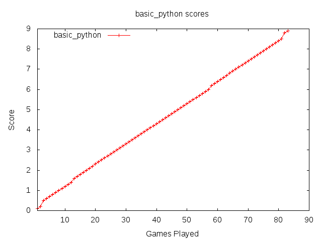

Overview for basic_python
| Name | Author | Language |
| basic_python | Sam Moore | python |
Description
Sample AI - Provides classes that obey the manager program's protocol, and stores the state of the board and pieces, but only makes randomised moves.
Whoops...
Due to a last minute bug introduced by non-integer score values, part of basic_python's file got nuked.
It's total score was 1.7
You can probably work out it's other stats by reading the files for the other agents.
basic_python has been removed from subsequent rounds.
Round 1
Round Overview
| Score | Wins | Losses | Draws | Illegal | Errors |
| 1.7 | 0 | 0 | 0 | 0 | 0 |
Accumulated Results
| Score | Wins | Losses | Draws | Illegal | Errors |
| 1.7 | 0 | 0 | 0 | 0 | 0 |
Round 2
Round Overview
| Score | Wins | Losses | Draws | Illegal | Errors |
| 1.4 | 0 | 14 | 0 | 0 | 0 |
Round 2 Scoreboard
Detailed
Accumulated Results
| Score | Wins | Losses | Draws | Illegal | Errors |
| 3.1 | 0 | 14 | 0 | 0 | 0 |
Round 3
Round Overview
| Score | Wins | Losses | Draws | Illegal | Errors |
| 1.4 | 0 | 13 | 1 | 0 | 0 |
Round 3 Scoreboard
Detailed
Accumulated Results
| Score | Wins | Losses | Draws | Illegal | Errors |
| 4.5 | 0 | 27 | 1 | 0 | 0 |
Score Graph

Total Statistics